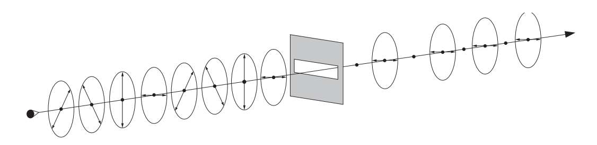
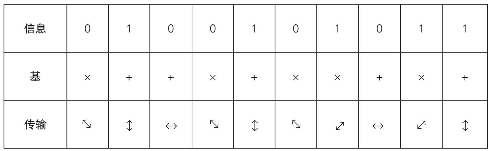
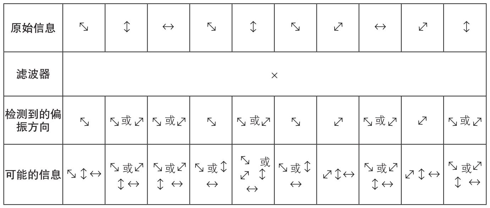
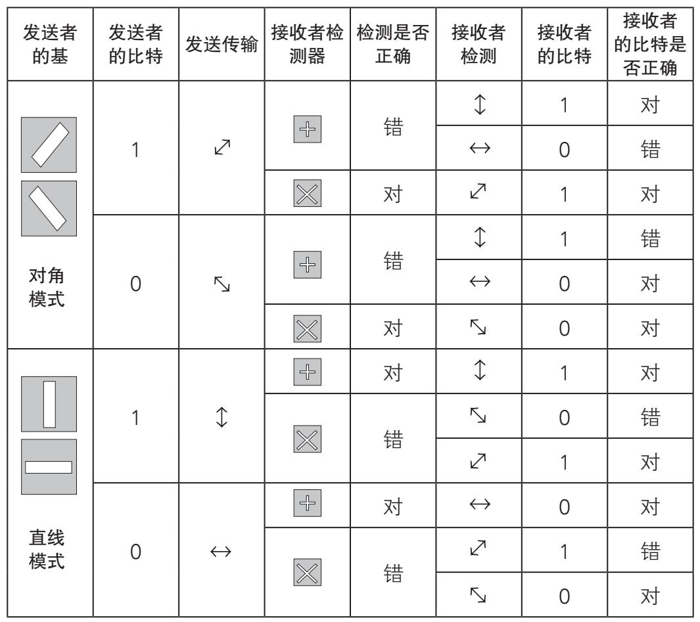
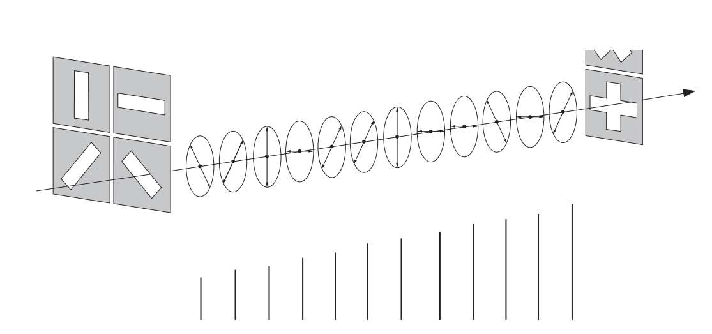
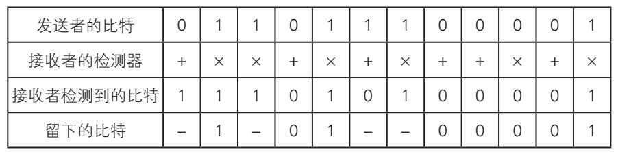

量子力学的其中一座基石是海森伯于1927年提出的“不确定性原理”。虽然它的公式表达非常专业，但它的创造者却大胆地用如下的话简要总结了这个原理：“原则上说，我们无法知晓当下的所有细节。”更具体地说，在任何给定的时刻都不可能准确地确定一个粒子的某些互补属性。我们以光子为例。偏振是它们的基本特点之一，这是个专业术语，是指电磁波的振荡或振动。［虽然光子朝各个方向振动，但为了简要论述，我们假设它朝四个方向振动：垂直（）、水平（）、向左呈对角线倾斜（）、向右呈对角线倾斜（）。］海森伯的原理表明，确认一个特定光子的偏振，唯一的方法是让它通过一个滤波器或“狭缝”，其方向依次为水平、垂直、左斜和右斜。水平偏振的光子穿过水平滤波器保持不变，而垂直偏振的光子被挡住。对于倾斜偏振的光子，其中一半的偏振方向变为水平，穿过滤波器，而另一半反弹回来，完全是随机的。而且，一旦光子从滤波器中发射出来，是不可能准确知道它的原始偏振方向的。
那么光子偏振与密码学有什么关系呢？关系非常大，我们下面就讲这一点。一开始，我们假设一个研究员想了解一组光子的偏振。要做到这点，他别无选择，只能选择一个方向固定滤波器，如水平方向。假设一个光子穿过了滤波器，研究者从中得到了什么信息呢？当然，他可以假设光子的原始偏振方向不是垂直的。他还能做出其他假设吗？不能。起初，人们可能想光子的原始方向中为水平的可能性要比倾斜大得多，因为倾斜的光子中，有一半无法穿过滤波器。但是，倾斜光子的数量同样是水平数量的两倍。需要重点强调一点：检测一个光子的偏振难度之大，并非技术或理论短板造成的，未来也无法修正，因为这是亚原子的天性使然。如果适当地开发利用，这一属性可以用来构建一个完全无法破解的密码，以此达成密码学的最高成就。

一组不同偏振方向的光子穿过一个水平滤波器，可以发现，一半倾斜的光子偏振方向变为水平，穿过了滤波器。
1984年，美国人查尔斯·贝内特（Charles Bennett）和加拿大人吉勒斯·布拉萨德（Gilles Brassard）基于偏振光子的传输构思出一种加密系统。第一步是收发双方约定一个方法，把0或1分别指定为一种偏振。在这个例子中，0和1被分派为两个图标或偏振基数的函数：第一个基叫作直线模式，由符号+表示，将1映射为偏振，0映射为偏振；第二个基叫作对角模式，由符号×表示，把1映射为偏振，0映射为偏振。
比如，信息0100101011可按如下方式传输。

如果传输过程中信息被间谍用一个×方向的滤波器截获，则间谍只能得出下表的信息：

可以看出，如果间谍不知道原始基，无论如何都无法从检测到的偏振方向中获取相应的信息。即便知道收发双方分派0和1的方式，但如果发送者随机改变基，那么间谍搞错的概率大约为三分之一，表中显示的是根据描述的条件分解出的所有收发的可能性组合。但是，这里存在一个非常明显的问题：接收者在译解密码时其实会跟间谍面临一样的问题。
说到这一点，收发双方可以通过某种保密媒介，如用RSA加密，给对方发送基序列解决这个问题。但这时，密码的安全性就会受到那些据推测存在的量子计算机的威胁。
为解决最后这个难题，布拉萨德和贝内特在原来的方法上又做了些精细的改进。请大家回想一下，德·维吉尼亚方阵加密家族中，多表加密法是使用简短、重复的密钥，密码因此呈现出规律性，给密码破译者创造了很小但很宝贵的可乘之机。但是，如果密钥用一连串比信息还要长的随机字符，又会怎样呢？而且，如果为了提高保密性，虽然漏洞明显，但是每条信息都用不同的密钥加密呢？答案是，我们将拥有一个无法破解的密码。
提出使用唯一密钥进行多表加密的第一人是约瑟夫·莫博涅（Joseph Mauborgne）。“一战”结束后不久，莫博涅当时担任美国密码破译中心的首席信息官，他设计了一个密钥本，每个密钥由100多个字符随机构成，收发双方每次根据指令破解密钥，然后再进行下一步的操作。这个系统叫作“一次性密码本”，就像我们之前所说的，它是无法破解的，从数学上可以证明这一点。实际上，国家高层领导人之间的机密通信用的都是这种方法。

既然一次性密码本的保密性如此之高，为什么没有普及呢？我们为什么还担心量子计算机的超能力，更别提什么光子操纵了？
随机创造数千个与信息量等量的一次性密钥，困难我们先不说，一次性密码本与其他经典加密算法存在一样的致命点：密钥分配，这也是现代密码学亟待解决的问题。
但是，用偏振光子传递信息是使用单独密钥而没有危险的绝佳途径。想做到这点，需要在发送信息前做三步：
第一，发送方借助不同的、随机的滤波器，分派垂直（）、水平（）和对角线（或）符号，给接收者发送一个由1和0组成的随机数列。
第二，接收者通过随机转换直线模式基（＋）和对角模式基（×）继续测量收到光子的偏振方向。由于接收者不知道发送者使用滤波器的顺序，因此0和1的大部分序列同样也会是错误的。
第三，收发双方用两个人都倾向的方式取得联系（不用担心联系渠道是否安全），然后双方交换如下信息：发送者解释用的什么基，是直线模式还是对角模式，只有这样才能正确读取每一个光子，而不会泄露光子的偏振（也就是使用的滤波器）。接收者告诉发送者在什么情况下他获取的基是正确的。在前面的表格中我们已经看出，如果收发双方各自得到正确的基，就能确定0和1序列的传输是完全正确的。最后，在私底下，双方各自丢弃与光子对应的比特，也就是接收者用错误基确定后的比特。
巴别塔的信息
阿根廷作家博尔赫斯曾在他的短篇小说《巴别塔图书馆》中设想了一座超大型图书馆，馆内收藏着所有可能的书：每一部小说、每一首诗、每一篇论文，以及对它们的评论文章和对评论文章的评论，无穷无尽。而一位密码破译者反复试验、不断摸索，想要破解一条用一次性密码加密的信息，就像在构筑这样一座图书馆。由于密码是完全随机的，可能的译解包含所有相同长度的文本，包含真正的信息、对信息的验证，以及所有专有名词用别的词替代后的相同长度的信息，无穷无尽。
这个过程的结果是，收发双方现在共享一个完全随机生成的、由1和0组成的序列：发送者对偏振滤波器的选择是随机的，接收者对基的选择也是随机的。以一个不大的12比特的信息为例，按照上述过程进行，如下图所示。


请注意，最终保留的比特，即便是正确译解，有一些也会丢弃不用。之所以这样，是因为接收者无法确定究竟是检测正确，还是用了错误的基。如果最初传递的是包含足够数量的光子，1和0的序列长度就足够形成一个一次性密码本，能够加密正常长度的信息。
现在，我们设想自己是间谍，已经截获了收发双方的光子和公开的对话。前面讲过，如果不能准确知道信息发送者使用的偏振滤波器，就不可能确定我们已经检测到了正确的偏振。获取收发双方交换的信息也无济于事，因为他们从不以具体的偏振传输信息。
令间谍更觉沮丧的是，如果没有获取正确的基，就相当于改变了光子的偏振，而他的侵入就此暴露——为了不被发现，他什么都不能做。对于收发双方来说，确保密钥中有足够长的一部分，能够保证一旦有窃听者对光子的偏振进行操作，他们就能检测到，这就够了。
为了达到这个目的，收发双方要达成一个非常简单的验证协议。完成了上述的三步，保留了足够多的比特，收发双方再次通过某种常见的媒介取得联系，然后从总数中随机选取一组比特（比如100比特）进行检查。如果这100个比特匹配，收发双方可以完全确定没有间谍窥探过此次传输，也就可以把这组序列看成是较好的一次性密码。否则，双方需要从头再来一次。
布拉萨德和贝内特的方法从理论角度来讲是完美的，但当理论应用到实际中时，就会面临大量的问题。1989年，努力一年之后，贝内特优化了一套包含两台计算机的系统，这两台计算机之间相距32厘米，一台担任发送角色，另一台担任接收角色。几小时的尝试和调整后，实验取得了成功，收发双方完成了所有步骤，甚至还能验证彼此的密码，可见量子加密是可能实现的。
贝内特的实验具有历史性意义，不过却有明显的缺陷，收发双方只能在一小步的距离内发送秘密，事实上和两人耳语的保密效果差不多。不过，在未来几年内，其他研究团队增大了传输的距离。1995年，日内瓦大学的研究人员用光线发送信息，距离长达23千米。2006年，美国洛斯阿拉莫斯国家实验室的一个研究团队用同样的步骤，把信息发送距离增加到107千米。虽然与常规通信相比，它的信息发送距离还不够长，但足以胜任在绝密信息为重中之重的小范围地区内的工作，比如政府大楼、公司总部等地。
先不考虑发送信息的实际限制，单就传输的信息不被损坏这点来说，即便是在量子层面，也是不可能的。量子密码象征着“秘密”在“泄密”面前、加密者在解密者面前的最后一次狂欢。现在，我们必须得为自己考虑的是，如何应用这个强大的工具，谁又会从中受益，这和我们所有人的未来息息相关。